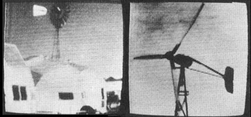

New Directions Radio
by COPTHORNE MACDONALD
November/December 1974
It's hard for me to believe, but this issue marks a first anniversary for New Directions Radio . . . and I think it's in order at this time both to look back over the activities of the past twelve months and to start a new project.
FINDING LIKE-MINDED FOLKS
One of the problems with hearing a different drummer is that the marching can get pretty lonely. MOTHER has helped a lot of people find others attuned to the same beat . . . including, this past year, some of us hams who have been moving into new lifestyles. Traditional amateur radio-with its emphasis on equipment, hello-goodbye contacts and other forms of noncommunication-didn't seem to fit our changing lives, yet we sensed the potential usefulness of the airwaves as an alternative tool.
And, by golly, we in New Directions have gotten into really using that tool. What a world of friendships has blossomed this past year! Most of us have never met in person, but we've shared information, mutual support and encouragement on the air as though we were next-door neighbors. It's McLuhan's communication-shrunk Global Village, I guess! Such, one-to-one interaction via ham rig takes no big-deal organizing or planning, and it sure is nice. If nothing else ever comes of it all, this column has at least brought into contact a growing circle of folks who have much to share and who possess some far-out tools which allow them to do that sharing at a distance. Thanks, MOM.
THE ROUNDTABLES
One attempt at exchanging information-the New Directions Roundtables-might be called our first structured "project", and a look back at a whole year of meetings triggers many thoughts. I'm reminded of the nursery rhyme:
There was a little girl
Who had a little curl
Right in the middle of her forehead.
When she was good
She was very, very good
But when she was bad she was horrid.
While none of the sessions were really horrid, some were certainly better than others. Many were highly moving experiences, and a number, frankly, just failed to happen.
Part of the difficulty with the Roundtables has been technical. The 20-meter coast-to-coast Sunday gettogethers have been plagued by interference, while the East and West Coast regional meetings on 40 and 75 have fared somewhat better.
Transmission problems aside, though, we've experimented enough to know something about what it takes to make an interesting session. My conclusion is that the occasional intellectual raps about what "they" should be doing to make the world better have tended to go around in circles. The meetings which really clicked were those in which a "doing" individual opened up a portion of his or her life and experience to the rest of us.
Really exciting were the Sundays when Jack Miller told how he left the Associated Press to start the North Country Anvil, when Don Marier described his visits to people working on energy projects and when Nick Johnson talked about his ongoing battle to get radio and TV out of the hands of big money. Do you remember the day Charles Duncan discussed beekeeping, and the time Les and Pat Stanwood recounted their survival summer on an island off the coast of British Columbia? Yes, it can be very, very good!
The fact is, there are a lot of folks these days who have interesting projects going and interesting tales to tell. If enough of us make the effort to track them down, we'll have many exciting and broadening sessions. If we don't, we won't. It's as simple as that.
INFORMATION-SHARING IN THE FUTURE
This past year has been one of general probing. A number of people have thought of additional possibilities for putting ham radio to good use. We sent up some trial balloons and got some responses. Perhaps it's time now to get a little deeper into specifics and think about what it would take to move some of those ideas from dreaming to happening. "Dream big, but plan small" might be a good approach as we consider pilot projects which could later be expanded or duplicated if they worked out well.
Since I have at least a full share of idealist's blood which is always sending me into one fantasy or another, I've been trying to "dream big" about a particularly wild possibility: that of a ham-radio-based information system which really works. In my more exotic visions I've pictured a great resource center on a mountaintop with high-gain antennas pointing toward the far corners of the world. I think of books, magazines, tapes, films, resident experts and phone-patch access to still other authorities . . . a computer unerringly uncovering obscure articles which provide needed information . . . medical resource people watching incoming images of microscope slides on their slow-scan TV screens, checking radio-transmitted electrocardiograms and helping distant patients back to health. At this point the whole notion starts getting a little science-fictiony and never-never-landish.
Then I start thinking about real people and that elusive balance between self-help and mutual aid. I consider the kinds of sharing that are meaningful, and a realistic "today" approach starts to settle into place.
To elaborate: Sometimes the things we do for people don't really help them. When we share what we know, however, we aid the other per son in developing a new area of competence, a new strength . . . and most of us are qualified to do this in some field. We've all followed our individual paths in life, pursuing different interests and developing different skills along the way. We've each learned about a few things in some depth, and have probably picked up a modest collection of books and magazines dealing with those subjects. If our bag of tricks also includes a ham license and a rig, we're in a position to share that knowledge with folks at a distance . . . and to let our neighbors and nearby friends share what they know.
As I see it, each of us hams can do two things at an individual level: [1] offer the use of his station to others, so that local freaky folks can pass on what they're into, and [2] set himself up as a mini-information service to help distant freaky folks learn more about the things that interest them.
For example: I know something about electronics, and something about how to travel cheaply in Latin America. Madeleine, my wife, understands basic health care. We've both had a little experience with free schools, and we have some friends across town teaching in an open educational system. We aren't super experts in these areas, but we are interested in them . . . enough to share what we do know and to help others find the answers we don't have. In return, we'd receive the enjoyment of exchanging information and ideas with people who are into similar things.
If you're willing to do likewise, it's simple to take that all-important first step. All you have to do to get your own station-and your personal strengths-brought to the attention of MOTHER's other readers is to send me a card or letter patterned after the sample which accompanies this article. (Please send such information to my address, not to MOTHER.) Your data will appear in a future installment of "New Directions Radio", along with this statement:
When circumstances permit, the following radio amateurs would like to offer the use of their stations free of charge to others. Certain of them also have access to information in specific areas of interest, or to people with experience in particular fields. If asked, these hams will attempt to provide information via radio in the categories listed. Contact individuals directly to make arrangements.
This seems to me an ideal grassroots way for us hams to offer our skills to some of the other people who are also working toward the establishment of a better world. You're already busy, of course, so being listed carries with it no obligation to render massive aid . . . but if you're not listed, you might miss some real opportunities to give and grow.
Peace,
Cop MacDonald (WØORX)
P.O. Box 483
Rochester, Minn. 55901.
 Two SSTV photos shown by Don Marier: a small solar furnace and a solar-healed house in Colorado. |
 Steve Baer's New Mexico home as presented by Don Marier via SSTV... and a view of a Jopp wind generator. |
 Also from Marier's report... an example of eco-architecture and a hydraulic ram pump. |
|
 Sample of data to be provided by participants in the New Directions information-sharing project. |
|
|